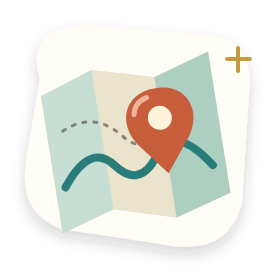
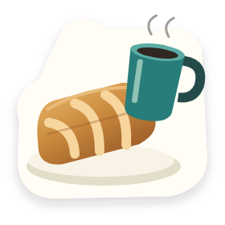
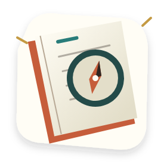

Propuesta original para reemplazar la barra genérica de los rótulos del piloto. Silueta recortada, volumen por planos, tipografía de marca y textura sugerida por los bordes. Recursos nuevos sin copiar gráficos, logo ni colores de Alan por el mundo.

PNG transparente · ilustración independiente

PNG transparente · ilustración independiente

PNG transparente · ilustración independiente
Estos PNG son ilustraciones reutilizables. Las composiciones de Pátzcuaro y las pruebas sobre material propio se conservan con el episodio. No son aprobación del estilo ni animaciones ya verificadas en Clipo. Volver a la guía